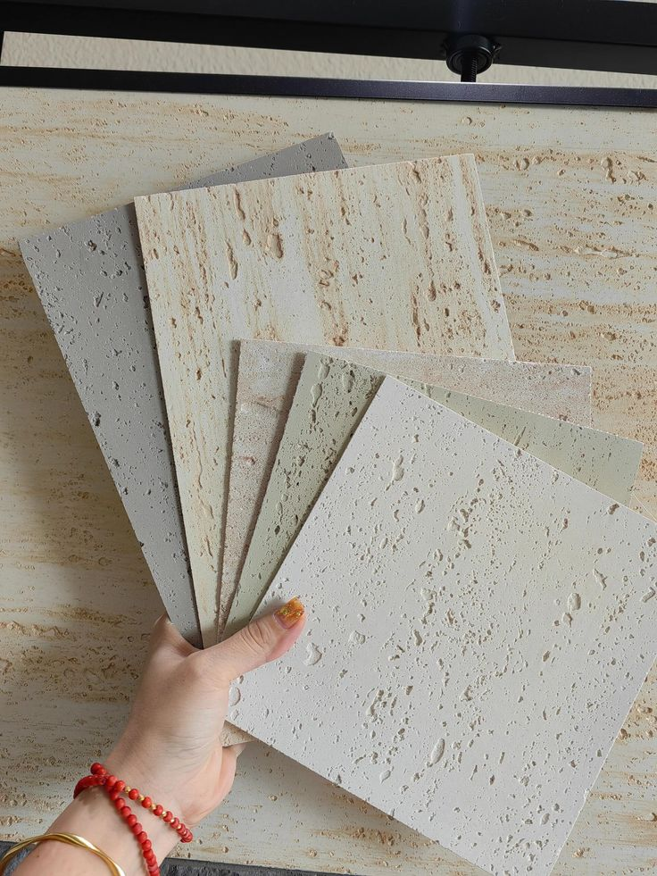
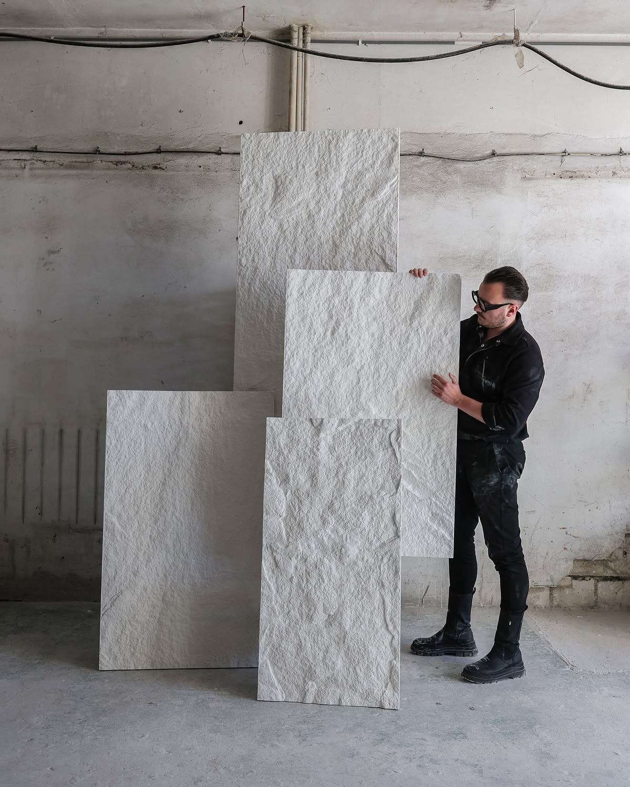
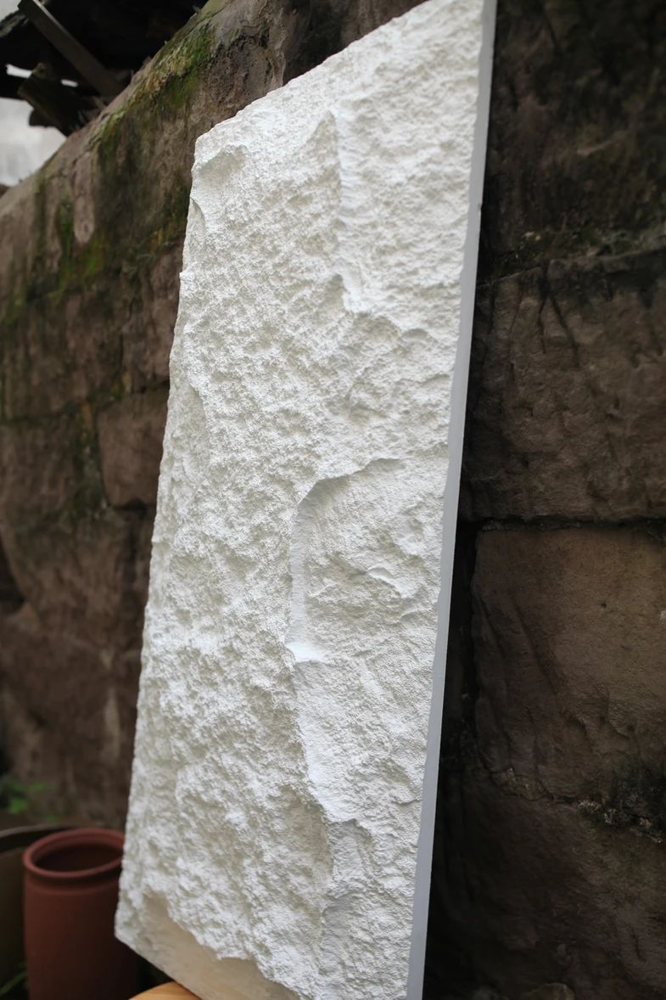
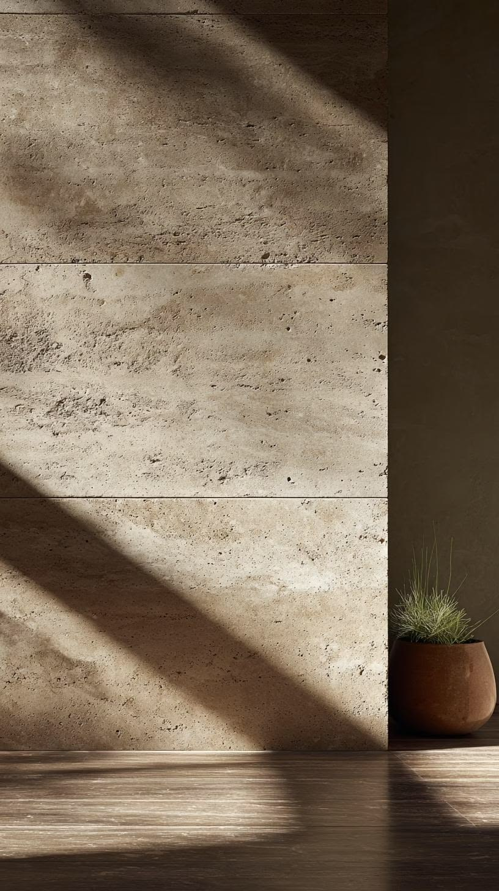
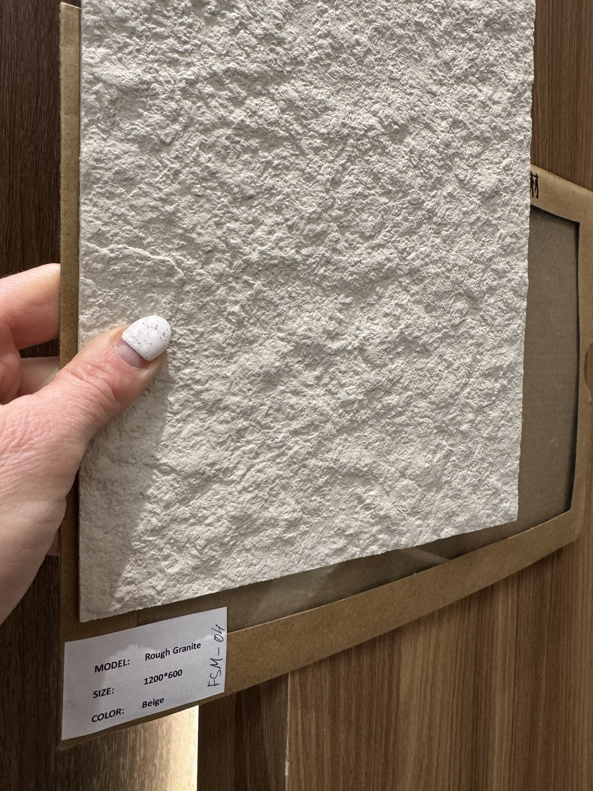

嵐，是山間的霧氣；石，是大地的骨架。我們以軟石為語言，把自然的感動砌進每一個空間——可彎曲、防水、輕量，為設計師打造創意與高質感的牆面。
A material company that sells feeling, not stone.
嵐，是山間的霧氣；石，是大地的骨架。
嵐石把自然的感動，砌進每一個空間。

軟石跳脫傳統石材的框架，讓觸感與想像自由流動。一片 2–3 mm 的柔性面材，做得到天然石材做不到的事。

柔性薄片可彎折至 2 mm 弧度，貼覆柱體、曲牆與弧形量體，造型自由不受限。

單片重量僅為天然石材的數分之一，降低結構載重，施工快速、運輸無負擔。

具防水與防火特性，室內外牆面、潮濕空間與公共場域皆適用，安心耐久。

翻模自天然石材表面，保留真實的紋理與顆粒，質感與自然石近乎無異。
從粗面花崗到洞石紋理，嵐石以天然石的四種質地回應每一種空間的個性——讓牆，成為作品。
嵐石不只供應材料，更與設計者一同完成空間的敘事。從選材到落地，三個階段，一致的篤定。
理解空間的語言與設計的意圖，從四大系列中為您對位最合適的面材，並提供樣品與技術規格。
依牆面尺度、弧度與光影條件，規劃排版與收邊細節——讓材料服貼於設計，而非設計遷就材料。
提供完整施工說明與注意事項，輕量好施作；從一片樣品到整面立牆，品質一致，恆久如初。
Speak the way stone weathers—slowly, with certainty, nothing wasted.
無論是樣品索取、材質諮詢或專案合作，我們都樂於與您談談空間的可能。歡迎來訪桃園藝文特區，親手感受軟石的溫度。